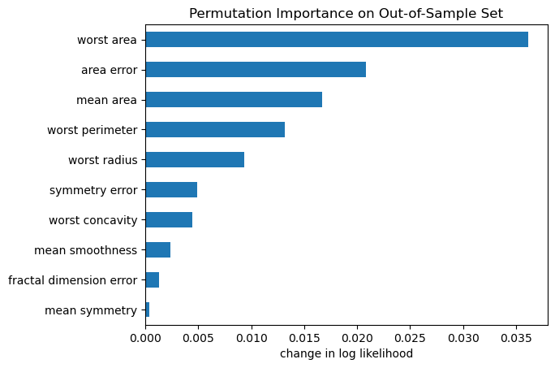

XGBoost for Binary and Multi-Class Classification in Python
python
tutorial
gradient boosting
xgboost
A step-bystep tutorial on binary and multi-class classification with XGBoost in python using sklearn and the xgboost library
Author
Matt Bowers
Published
November 28, 2023
Today we continue the saga on gradient boosting with a down-to-Earth tutorial on the essentials of solving classification problems with XGBoost. We’ll run through two examples: one for binary classification and another for multi-class classification. In both cases I’ll show you how to train XGBoost models using either the scikit-learn interface or the native xgboost training API. Once trained, we’ll evaluate the models with validation data then inspect them with feature importance and partial dependence plots. You can use the XGBoost classification notebook in my ds-templates repository to follow along with your own dataset.
Afternoon in the Mara
Preparing Data for XGBoost Classifier
Our dataset must satisfy two requirements to be used in an XGBoost classifier. First all feature data must be numeric—no strings and no datetimes; if you have non-numeric features, you need to transform your feature data. Second, the target must be integer encoded using \(\{0,1\}\) for binary targets and \(\{0,1,\dots,K\}\) for multiclass targets. Note that if your data is encoded to positive integers (no 0 class) XGBoost will throw potentially cryptic errors. You can use the scikit-learn LabelEncoder (which we’ll do below) to generate a valid target encoding.
XGBoost Training APIs
The xgboost python library offers two API’s for training classification models: the native train function and a wrapper class called XGBClassifier, which offers an API consistent with the scikit-learn universe. I’ll show you how to use both approaches in the examples below, but if you’re planning to use other utilities from scikit-learn, you might find the XGBClassifier approach to be more convenient, since the trained model object will generally play nice with sklearn functionality.
Binary Classification Example
Breast Cancer Wisconsin Dataset
We’ll demonstrate binary classification in XGBoost using the breast cancer wisconsin data, one of scikit-learn’s built-in toy datasets. This is a tiny dataset with 569 observations of 30 features and a binary target representing whether samples are malignant or benign..
import numpy as np import pandas as pd import matplotlib.pyplot as plt from sklearn import datasetsimport xgboost as xgb dbunch = datasets.load_breast_cancer(as_frame=True)df = dbunch.framefeatures = dbunch.feature_names target_names = dbunch.target_names target ='target'df.info()
In this dataset, the features are all numeric, so no need to do preprocessing before passing to XGBoost. Below we’ll have a look at the target to ensure it’s encoded in \(\{0,1\}\) and to check the class balance.
We need to set a couple of model parameters, most notably objective, which should be set to binary:logistic for binary classification. I also prefer to explicitly set tree_method to something other than its default of auto; usually I’ll start with exact on small datasets or approx on larger ones. Note also that The train function expects to receive data as DMatrix objects, not pandas dataframes, so we need to create dense matrix objects as well.
We’ll use the sklearn.metrics module to evaluate model performance on the held-out validation set. Have a look at the scikit-learn metrics for classification for examples of other metrics to use.
One thing to watch out for when computing metrics is the difference between the actual labels (usually called y_true), the model’s predicted labels (usually called y_pred), and the models predicted probabilities (usually called y_score). If you’re using the XGBClassifier wrapper, you can get predicted labels with the predict method and predicted probabilities with the predict_proba method. Also note that whereas predict returns a vector of size (num data), predict_proba returns a vector of size (num data, num classes); thus for binary classification, we’ll take just the second column of the array which gives the probability of class 1.
And we can compute the AUC, a popular classification metric based on the ROC curve, which depends on the predicted probability rather than the predicted labels.
Here we’ll compute the permutation feature importance, which tells us by how much the model’s performance changes when we scramble a particular feature’s values at prediction time. This reflects how much the model relies on each feature when making predictions.
importances_permutation = pd.Series(permu_imp['importances_mean'], index=features)importances_permutation.sort_values(ascending=True)[-10:].plot.barh()plt.title('Permutation Importance on Out-of-Sample Set')plt.xlabel('change in log likelihood');

top 10 features by permutation importance on validation set
Partial Dependence
A partial dependence plot (PDP) is a representation of the dependence between the model output and one or more feature variables. In binary classification, the model output is the probability of the so-called positive class, i.e. the class with encoded label 1, which corresponds to probability of “benign” in this example.. We can loosely interpret the partial dependence as showing how the expected value of the target changes across values of a particular feature, marginalizing over other features. I say “loosely” because it comes with caveats, a particularly serious one being that correlation among features tends to invalidate the above interpretation. Anyway, we can treat PDPs as useful heuristics for getting a sense of how a model thinks the target changes with feature values.
PDP of target probability of benign vs three features
Multi-Class Classification Example
Forest Cover Type Dataset
We’ll illustrate multi-class classification using the scikit-learn forest cover type dataset, which has around 580k observations of 54 features and a target with 7 classes.
For multi-class classification, our target variable must take values in \(\{0,1,\dots,K\}\). However, from the histogram of the cover type above, we see that it takes values in \(\{1,2,\dots,7\}\). To fix this we can use the scikit-learn label encoder to create a valid target column.
from sklearn.preprocessing import LabelEncoder target ='encoded'enc = LabelEncoder()df[target] = enc.fit_transform(df['Cover_Type'])print(np.sort(df[target].unique()))
If you’re training with the train function, multi-class classification can be done with two objectives: multi:softmax and multi:softprob. Both use the same loss function—negative multinomial log likelihood—but the softmax option produces a trained Booster object whose predict method returns a 1d array of predicted labels, whereas the softprob option produces a trained Booster object whose predict method returns a 2d array of predicted probabilities. In either case, you also need to explicitly tell XGBoost how many classes the target has with the num_class parameter.
In multi-class classification, I think the scikit-learn XGBClassifier wrapper is quite a bit more convenient than the native train function. You can set the objective parameter to multi:softprob, and XGBClassifier.fit will produce a model having both predict and predict_proba methods. Also there is no need to explicitly set the number of classes in the target and no need to create the DMatrix objects.
Some binary classification metrics, like AUC, can be extended to the multi-class setting by computing the metric for each class, then averaging in some way to get an overall score. The details are controlled by the average and multi_class parameters, which are described in the documentation.
importances_permutation = pd.Series(permu_imp['importances_mean'], index=features)importances_permutation.sort_values(ascending=True)[-10:].plot.barh()plt.title('Permutation Importance on Out-of-Sample Set')plt.xlabel('change in multivariate log likelihood');
top 10 features by permutation importance on validation set
Partial Dependence
Recall that partial dependence reflects how the expected model output changes with a particular feature. In the multi-class setting, the model has multiple outputs—one probability for each class—so we need to choose which class probability to show in the plots. We choose the target class with the target parameter; be sure to pass in the encoded value, e.g. we need to use the label encoder to transform a raw class label back into the encoded value. Here we’ll examine partial dependence for the probability of cover type 3.
PDP of target probability of cover type == 3 vs elevation and distance to roadway
Wrapping Up
Well, for me, those are really the minimal nuts and bolts one needs to get XGBoost models working on classification problems. If you dig this tutorial, or if you have additional insights into using XGBoost to solve classification problems, let me know about it down in the comments!
Go Deeper
If you’re feeling like Alice, and you want to go tumbling down the rabbit hole, might I recommend checking out some of the following: